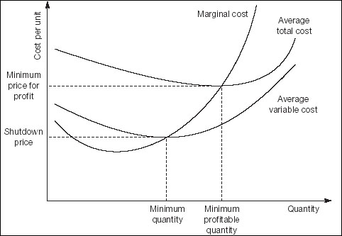

Would you sell your products for less than they cost? Does this sound likely? Unless you had some very special reason for wanting to make (or, at least, to accept) a loss you will sell one more widget only if the revenue from that sale exceeds its cost to you. But what, exactly, is the cost?
Recall in the above example that you buy widgets for $1 each and sell them for $5 and you have fixed costs of $80 a day.
If you sell just one widget in a day, your total, average and marginal costs are $81. If you sell two widgets, total costs edge up $82, average total cost per widget slips to $42 and the marginal cost per item plummets to $1.
Marginal cost is the expense associated with selling one more item (the incremental cost, or in beanie-speak, the differential). In this example, the total cost will rise steadily, the average cost will continue falling, and the marginal cost of every widget after the first one will remain fixed at $1. Except that it won’t. At some point the marginal cost will start rising due to limited supply of widgets or the additional costs of employing staff, renting more space, trucking more widgets – the law of diminishing returns nearly always rears its ugly head sooner or later.
At sales of 40 widgets a day the average total cost has slipped to $3. Suppose that rationing pushes up the amount that you have to pay for the forty-first widget to $4 (and your buying costs per unit will continue to increase thereafter). Marginal cost has gone back above average cost, so average cost must rise. This is obvious if you think about the way that an average is calculated.
If you were to plot these trends, you would see a chart similar to Fig. 23.3. You will spot two key figures:
Shutdown price. If your income per unit is less than minimum average variable cost per unit (less than the point where marginal cost = average variable cost) you are not covering your variable costs. In other words, if gross revenue per widget is less that $1, you might as well shut up shop and spend your days on the beach.
Minimum economic price. If your income per unit is less than the lowest point in your average total cost curve (where average total cost = marginal cost) you are not covering fixed and variable costs. If you sell widgets for less than $3, you will make a net loss.

If you are selling between your shutdown and minimum economic prices, you are covering the variable costs of the product, but not your fixed costs. You are making a loss, but at least you are earning more than if you did nothing. For example, if you are selling widgets for between $1 and $3, you are recovering some of your fixed costs. You need to develop a sales strategy to move to full profitability.
As you will already have noticed, you can apply the normal to marginal analysis and calculate the likelihood of various outcomes. An interesting exercise, if you feel so inclined, is to assume that costs are distributed normally around the central expectation and establish a range of probable outcomes.
‘We are usually convinced more easily by reasons we have found ourselves than by those which have occurred to others.’
—Blaise Pascal